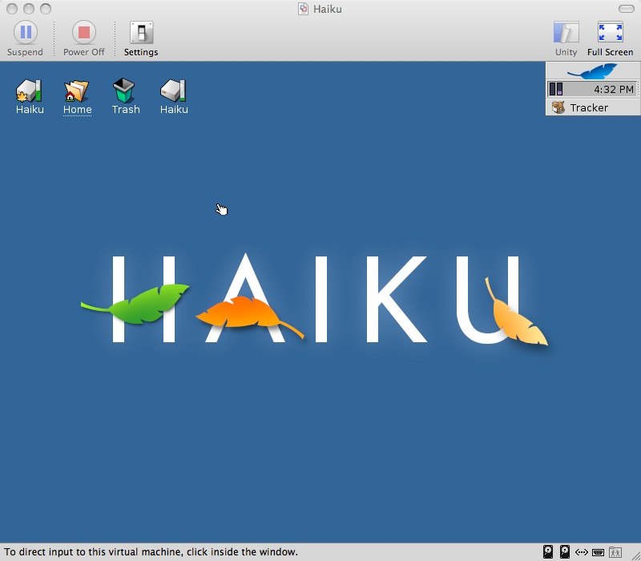
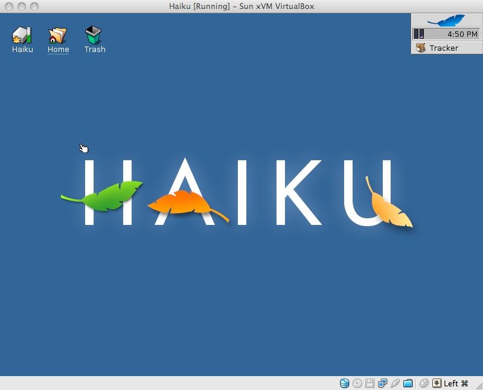

Computer emulation is a very handy tool, not only for users, but also for developers. Obviously running Haiku under native hardware is preferred (due to better performance), but this is not always an option. Manufacturers are often reluctant to release hardware specifications towards developers, and they are therefore often left to the difficult task of writing hardware drivers from scratch - it is a plague and barrier for smaller operating systems. Since Haiku can not possibly support all the hardware available, the release of Haiku disk images that are compatible with leading industry emulators is a logical choice. Also, users may not be confident in natively installing pre-alpha software onto their computers, leaving emulators as a 'safe' and attractive option to test out Haiku.
Emulators attach to your hardware and usually emulate more common hardware on top. Because the hardware is now the same, and is fixed and consistent, development under emulation can also be consistent - bugs can be easily replicated as well, eliminating suspect hardware. A couple of Haiku developers develop under emulators occasionally and realize their importance towards the development of Haiku.
Haiku runs very well under several of the major emulators such as Vmware, Virtual Box, and Qemu (has also been shown to run under Parallels and Virtual PC). Most emulators are cross-platform, and can be downloaded from the following locations:
- Vmware Player (Free but limited in function; Windows and Linux)
- Vmware Server (Free with registration; Windows and Linux)
- Vmware Personal Work Station (Commercial; Windows and Linux)
- Vmware Fusion (Commercial; Mac OS X)
- Qemu (Free; Windows)
- Q (Free; OS X)
- Virtual Box (Free; Windows, Mac OS X, Linux and Solaris)
- Parallels (Commerical; Mac OS X)
- Virtual PC for Windows, Virtual PC for Mac (Free)
Of all the emulation options, Vmware, Virtual Box, and Qemu are well supported without the need for format conversion or tinkering (should work 'out of the box'). Haiku under Vmware is the fastest emulation option (on a subjective basis), and has driver support for networking, audio, and video. Virtual Box has Vmware disk compatibility yet the audio isn't yet supported.
|  Haiku under Vmware |
 Haiku under Virtual Box |
 Haiku und Q (Qemu) |
{kind=link}
{kind=link}
Haiku's disk images are usually built on a daily basis, and can be downloaded here:
Using disk images
VMWare:
To use Haiku under Vmware, simply unzip the archive and execute the included *.vmx file.
VirtualBox:
Note: Use the latest version of VirtualBox for the best compatibility, but emulating Haiku in VirtualBox isn't totally supported. Some settings will require you have a specific processor to work. If it isn't the case, you will either have to wait for upgrades (from Haiku and/or VirtualBox) or get a free version of VMWare.
To use the VMWare disk image under Virtual Box, create a virtual machine (click ) and press next. First name your image (ex. Haiku r28888). Under the tab, select "other", and for the tab, select "other" again. Next, you will have to chose the amount of RAM you wish to allocate to Haiku (512 MB through 1 GB should be enough). Remember your host OS will be deprived from this amount of memory.
Now in the section, enable , then click , click , navigate to your VMWare (.vmdk) image and click . Select it in the list, and click . Now your done creating your Virtual Machine, but you will have to tweak some settings.
With your new virtual machine selected, click on . Here you can tweak your VM to your likings. Haiku will not boot if the "VT-x/AMD-V" option isn't on. Go to and activate the option. Your processor might not support this option, if so, your out of luck for VirtualBox emulation.
In order to get networking running under Haiku in Virtual Box, under the tab, change the adapter type to "Intel Pro/1000 MT (82540OEM)". You can use either "NAT" or "Host Interface" under the attached to option. If you choose "Host Interface", you'll then have to select your desired network card in the bottom window ("Host Interfaces")
Sound doesn't work when emulating Haiku in VirtualBox, so you might as well disable it. I haven't tested the USB ports, but it should work. For more information on the various options you have, refer to (the very complete) VirtualBox User Manual.
Parallels Desktop:
Note: These instructions have been posted in the forums, they are not guaranteed to work, and some issues might arise (like networking). Visit the forums for more information.
Download a nightly build from the Haiku Build Factory and extract the tar.bz2 file.
Move the extracted haiku.image file to the desired directory. Open terminal and navigate to that directory. Type:
dd if=/dev/zero of=haiku.image bs=1024 count=1 conv=notrunc seek=408600
Rename the haiku.image file to haiku.hdd.
Use ImageTool to resize the haiku.hdd file to 120MB.
Create a new virtual machine in Parallels, with Guest OS Type as Windows.
Set the Hard Drive to the haiku.hdd file that you downloaded.
Qemu:
For Qemu, rename the raw disk image to haiku.img and manually configure a virtual machine using that disk image.
Increasing disk image space - Creating and formatting disks
The disk images provided come as 250MB fixed disk images. The disk image's size can't be increased, but one can easily create a new disk with an increased capacity. Under the emulators GUI and virtual machine's settings, you should find an option to add another hard disk.
Choose which type of disk you would like to create. There are two options:
Fixed disk: This means the disk's space will be pre-allocated, i.e if you choose to create a 10GB fixed disk, the disk image will occupy 10GB of data on your hard drive.
Expanding disk: If you choose to create a 10GB disk image, the disk will appear as it's 10GB under Haiku, but will only actually be as big as the space that's used within Haiku (it grows).
Once you've created the disk image to a size of your choice, add the secondary disk to your virtual machine and boot Haiku. The disk won't show up until you have formatted it. Navigate to Haiku's DiskSetup application - the disk should be shown (see a 1GB disk added in the screenshot below).

Select the disk, and then select . Select the default variables, and accept the alert messages. Return to the menu and select Partition Mount - another Haiku disk should now be on your desktop (without the leaf logo). Now simply open a Tracker window on the boot disk, and a Tracker window on your newly created disk and copy the contents over (over-writing the home folder on the new disk).
One final step: Open a Terminal and type:
df
to see the disk space size & usage on each disk. After selecting the correct disk (probably /Haiku1) type:
makebootable Haiku1
You can now shutdown the Haiku virtual machine, remove the primary disk image (the Haiku disk image you downloaded) in your virtual machine's preferences, and make sure that the new disk you created is your primary disk now.
Tip: In order to skip a couple steps, you can download pre-built bootable disk images.
Transferring files between your host computer and a Haiku virtual machine
There are several ways you can transfer files between the host and guest machines on your computer. Since there is no 'Vmware tools installer' for Haiku, file-sharing between the host and guest isn't built-in, and there's no clipboard sharing. Here are a couple of ways you could share files.
Transfer files using a disk image: create a disk image with the files you'd like to transfer from your PC to Haiku. In Windows use a utility like Burn At Once, in OS X you could use the the hard drisk utility to make an ISO i.e create a folder called 'test' on your desktop, put the files you want into that folder and execute the command:
hdiutil makehybrid -o /Users/myusername/Desktop/test.iso /Users/myusername/Desktop/test -iso -joliet'
(replacing "myusername" with your username). Attach the resultant ISO images in place of your optical disk in your virtual machine preferences.
Transfer files over the internet: upload files to an online server you have, and then download them internally through Haiku. Note, Haiku doesn't yet have a web browser included, however, you can use wget.
Transfer files between the host and machine: First you'll need to setup a FTP server on your host machine. OS X users can easily do this under their sharing preferences tab. As suggested, you can use wget to download files from your host machine. You could use wput to upload files to your host machine, alternatively, you could use a grahphical client like NetPenguin.